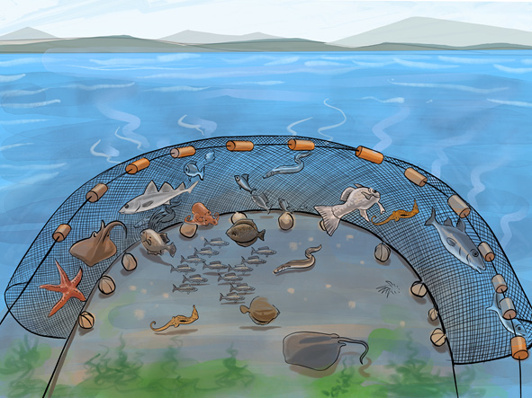

Ways of addressing improper fishing
Improper fishing is sometimes known as illegal fishing. The effects of improper fishing can be controlled by educating fishermen on the effects of using explosives, poisons and seine nets. The laws restricting improper fishing should be strongly enforced in order to improve fishing activities. Furthermore, fishermen should be supported so that they purchase and use friendly fishing tools such as fishing nets with an acceptable size at least two and half inches.